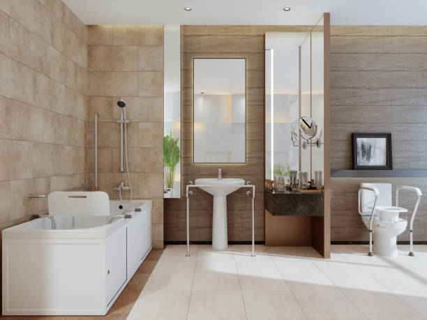

Croswell Michigan
info@freedomwalkintubs.pro
Croswell Michigan
info@freedomwalkintubs.pro

Transform your bathroom with top-rated walk-in tubs in Croswell Michigan . Designed for ultimate convenience, our tubs offer easy entry, fast draining, and therapeutic features, enhancing your daily bathing routine.
Click Here To Call Us (877) 848-1711Enhance your bathing experience with our premium walk-in tubs, designed for comfort, safety, and accessibility. In Croswell Michigan we specialize in providing top-quality walk-in tubs that cater to individuals with mobility challenges or those simply seeking a relaxing soak in a safe environment.
Our walk-in tubs feature easy-to-open doors, low step-in thresholds, and secure seating to ensure you enjoy a worry-free bath every time. Equipped with advanced hydrotherapy jets and ergonomic designs, our tubs promote relaxation, improve circulation, and alleviate muscle pain. Whether you’re upgrading your bathroom for added safety or luxury, our range of customizable options ensures the perfect fit for your needs and home décor.
We pride ourselves on delivering unmatched customer service and professional installation in Croswell Michigan . Our team works closely with you to assess your bathroom’s layout and recommend the ideal solution for your space. Each tub is crafted with high-quality materials to ensure durability and long-lasting performance.
Don’t compromise on comfort or safety—choose a walk-in tub tailored to your lifestyle. Contact us today in Croswell Michigan to explore our collection and transform your bathroom into a haven of relaxation and security. Experience peace of mind with the best walk-in tubs in Croswell Michigan !
Residential & commercial Walk In Tubs
Quality services at affordable prices
Immediate 24/ 7 emergency services


When it comes to upgrading your bathroom in Croswell Michigan a walk-in tub can provide both luxury and practicality, enhancing your home's accessibility and aesthetic appeal. Walk-in tubs come in a variety of styles and designs to complement any home, ensuring a perfect fit for your needs and preferences.
One popular style for homes in Croswell Michigan is the soaking walk-in tub, designed for relaxation with a deep, comfortable interior. Its sleek lines and modern features make it a stylish addition to any bathroom. For homeowners who want a more therapeutic experience, the whirlpool walk-in tub offers soothing jets that target sore muscles and improve circulation, ideal for anyone seeking relief from stress or chronic pain.
For those looking for space-saving solutions in smaller bathrooms, the corner walk-in tub utilizes corner space efficiently, offering a compact yet luxurious design. Walk-in tubs with built-in seating are another great option, providing extra convenience and comfort. These tubs often come with wide entry doors, making it easier to step in and out without any hassle.
No matter the design, walk-in tubs offer valuable benefits for homeowners in Croswell Michigan from increasing property value to enhancing safety and comfort. Whether you’re remodeling your bathroom or installing a new tub, investing in a walk-in tub is a smart choice that brings both function and style to your Croswell Michigan home.
Residential & commercial Walk In Tubs
Quality services at affordable prices
Immediate 24/ 7 emergency services
Enhance the beauty of your walk-in tub with our custom tile surrounds . Our design team works closely with you to create a unique tile configuration that complements your home’s decor while offering added insulation and a personal touch to your bathing space. Tile surrounds can elevate your bathroom’s aesthetics while enhancing safety and ease of maintenance.
When you choose our custom tile surrounds, you’re choosing to add a beautiful finish to your bathing area while also embracing safety and functionality. Our tile experts will guide you through every step of the design process, ensuring that each detail meets your vision and preferences. Trust us to provide quality craftsmanship and personal service in creating your ideal bathing sanctuary.

Our Safe Step walk-in tubs are designed with your safety at the forefront. Featuring unique designs that allow for easy access and exit, these tubs provide a secure bathing option for individuals of all ages. Equipped with anti-slip surfaces, grab bars, and low entries, our tubs mitigate the risks associated with traditional bathing methods. At Walk In Tubs our goal is to provide peace of mind and ease of use with every installation. We pride ourselves on our safety-first approach, ensuring our products meet the highest standards, so you can bathe with confidence. By choosing us, you embrace a safer bathing experience tailored to your needs.
The therapeutic benefits of a walk-in tub extend beyond simple bathing; they provide relief, relaxation, and rejuvenation. Our therapeutic walk-in tubs in Croswell Michigan are specifically designed to address various health conditions such as arthritis, muscle pain, and stress. Using therapeutic water jets and hydrotherapy technology, our tubs create a spa-like experience that alleviates discomfort and promotes healing.
When you choose our therapeutic walk-in tubs, you’re investing in a healthier lifestyle. Our experienced staff will help you choose the ideal features to suit your specific needs, ensuring that your bathroom becomes a personal haven for relaxation and recovery. Trust in our expertise and commitment to customer satisfaction—it’s what makes us the leading provider of therapeutic walk-in tubs in Croswell Michigan .

We believe that everyone deserves access to safe and comfortable bathing solutions, which is why we offer various walk-in tub financing options . Our flexible financing plans are designed to accommodate a range of budgets, making it easier for homeowners to invest in the safety and luxury they deserve without compromising their financial stability.
By choosing our financing options, you’re taking the first step towards enhancing your home’s comfort and safety in a way that fits your financial situation. Our knowledgeable team is here to guide you through the financing process, answering any questions you may have and ensuring you find a solution that works for you. Experience the peace of mind that comes with accessible financing for your walk-in tub installation.

Affordable doesn’t have to mean sacrificing quality. Our walk-in tub solutions in Croswell Michigan are designed to provide effective, safe bathing options that fit within your budget. We understand the importance of providing high-quality products without overwhelming our clients financially, making safety accessible to everyone.
Our tubs are crafted using reliable materials and innovative technologies that ensure both durability and functionality. We believe in transparency and will work with you to find models that meet your safety and comfort needs without breaking the bank.
By choosing our affordable walk-in tub solutions, you can expect expert guidance and support throughout your shopping and installation journey. Our dedicated team is here to help you make the right choice for your home, providing exceptional value for your investment.
Regular maintenance and timely repairs are essential for keeping your walk-in tub in optimal condition, ensuring safety and longevity. Our professional team at Walk In Tubs offers comprehensive maintenance and repair services in Croswell Michigan ensuring your walk-in tub continues to perform at its best. We understand the intricacies of walk-in tub systems, and our commitment to customer service guarantees quick responses and high-quality workmanship. By choosing us, you are assured of professional service and care, allowing you to enjoy your walk-in tub without any worries.

For many, managing pain effectively is a top priority, and our walk-in tubs in Croswell Michigan provide an ideal solution. With advanced hydrotherapy features, heated seats, and a user-friendly design, these tubs promote relaxation and ease, allowing you to manage your pain effectively through soothing soaks and therapeutic water jets.
By choosing our walk-in tubs for pain management, you're prioritizing your health and wellness. Our dedicated team works closely with each client to ensure their tub is equipped with the features that best address their individual pain management needs. Trust us to provide the finest walking solutions that empower you to take charge of your well-being .

Aging in place is an important consideration for many seniors who wish to maintain independence in their own homes. Our walk-in tubs come equipped with features designed specifically for this purpose, ensuring safety and accessibility while providing an inviting bathing experience.
Low thresholds, slip-resistant surfaces, and easy-to-reach controls are just a few of the key features that make our walk-in tubs ideal for aging-in-place solutions in Croswell Michigan . These thoughtful designs help to reduce the risk of falls and make bathing a more enjoyable and manageable experience for seniors.
By choosing our walk-in tub solutions, you are ensuring that you or your loved ones can age comfortably in place. Our expertise in consultation and installation reflects our commitment to enhancing the quality of life, making safety and comfort priorities in your home.
Years Experience
Expert Technicians
Satisfied Clients
Compleate Projects
At Freedom Walk-In Tubs, we understand that safety, comfort, and independence are paramount when choosing a walk-in tub. Proudly serving all cities in Croswell Michigan we specialize in providing premium walk-in bathtubs designed to meet the unique needs of seniors and individuals with mobility challenges. Our tubs offer a safe, accessible, and luxurious bathing experience, all while enhancing your bathroom’s functionality and style.
What sets us apart is our commitment to quality. We only offer the highest-grade walk-in tubs, built to last and equipped with advanced features such as slip-resistant floors, easy-to-operate doors, and soothing hydrotherapy jets. With over years of experience in the industry, we have refined our designs to provide an unbeatable bathing experience that combines safety and luxury. Our tubs are designed to give you peace of mind while enjoying a comfortable, relaxing soak.
Customer satisfaction is at the heart of everything we do. We take the time to listen to your specific needs, ensuring that your walk-in tub fits seamlessly into your lifestyle. Whether you’re looking to enhance safety or add a touch of luxury to your bathroom, Freedom Walk-In Tubs is your trusted partner. With our expert installation services and exceptional customer support, we promise a smooth and stress-free experience from start to finish.
Choose Freedom Walk-In Tubs for superior products, expert installation, and a commitment to enhancing your quality of life in Croswell Michigan . Your safety and satisfaction are our top priorities.
If you're looking to transform your bathing experience into a serene, luxurious retreat, our luxury walk-in tubs are the answer. Designed with elegance and comfort in mind, these tubs provide the ultimate in relaxation while ensuring accessibility and safety. Our luxury models feature high-end materials, customizable colors, and unparalleled finishes designed to elevate any bathroom aesthetic.
Investing in a luxury walk-in tub not only enhances your bathroom's appearance but also provides therapeutic benefits through hydrotherapy options. With advanced technology and user-friendly controls, you can enjoy customizable water temperatures, massage jets, and soothing air baths—all designed to maximize your comfort. Our team of experts in Croswell Michigan is dedicated to guiding you through every step of the selection and installation process, ensuring your tub fits perfectly into your space.
Additionally, all our walk-in tubs meet rigorous safety standards, making them an exceptional choice for seniors and individuals with mobility challenges. By choosing us, you can expect superior craftsmanship, an unwavering commitment to quality, and reliable customer support before, during, and after installation.
The healing power of water is well documented, and our hydrotherapy walk-in tubs harness this ancient therapy to bring relief to those with joint pain, arthritis, or muscle soreness. Hydrotherapy is not just a practice; it's a lifestyle choice that promotes wellness and relaxation. Our walk-in tubs are uniquely designed to accommodate various hydrotherapy jets that deliver targeted massage to alleviate pain and discomfort.
By choosing our hydrotherapy walk-in tubs, you're not just purchasing a bathing solution; you're investing in your health. These tubs can transform your bathing routine into a therapeutic experience, allowing you or your loved ones to unwind in comfort and safety. Our professional installation services ensure that each tub is set up correctly, adhering to safety and comfort standards. Let the soothing waters rejuvenate your body and mind in the comfort of your own home.
Just because you have a small bathroom doesn't mean you have to compromise on comfort and safety. Our compact walk-in tubs for small bathrooms are designed to maximize space without sacrificing luxury and accessibility. These tubs feature a thoughtful design that enables full functionality in smaller footprints, allowing homeowners to enjoy the benefits of a walk-in tub without the need for extensive renovations.
Our compact tubs are perfect solutions for seniors, those with mobility challenges, or anyone looking for an efficient bathing solution. We tailor our installations to fit perfectly within your existing space, ensuring that you can enjoy a relaxing soak without the hassle of extensive alterations. Our expert team is dedicated to providing a seamless experience, from design to installation. Choose us for compact walk-in tubs that prove safety, style, and efficiency can coexist.
Accessibility is key to enjoying a safe and comfortable bathing experience. Our wheelchair-accessible walk-in tubs in Croswell Michigan are specifically designed to cater to individuals with mobility challenges, providing a safe and relaxing environment that promotes independence. With wider doors and built-in grab bars, our offerings ensure that users can enter and exit the tub with ease.
By opting for our wheelchair-accessible tubs, you’re not just making a purchase; you’re making a commitment to safety and wellness. Our walk-in tubs are equipped with slip-resistant surfaces and carefully designed seating to minimize the risk of falls. We pride ourselves on our personalized service, offering consultations to determine the best fit for your needs and preferences. Trust us to provide the highest quality in wheelchair-accessible bathing solutions.
Experience the ultimate in relaxation with our walk-in tubs equipped with air jet therapy. These innovative tubs provide a gentle yet effective hydrotherapy experience that can soothe sore muscles and improve overall mood. The air jets create a soft, bubbling effect that surrounds your body in warm water, offering a spa-like environment in your own home. Our team at Walk In Tubs understands the importance of mental and physical wellness and is committed to helping you enhance your home with the benefits of air jet therapy. Our knowledgeable staff will help you explore the available options, ensuring you get a walk-in tub that not only meets your safety needs but also enhances your relaxation and wellbeing.
Enjoying a bath can be transformed into a luxury experience with walk-in tubs featuring heated seats. Imagine sinking into warm water with the added comfort of a heated seat, allowing you to relax and unwind. Our walk-in tubs with heated seats offer the ultimate indulgence, particularly in colder weather, ensuring maximum comfort every time you step in. At Walk In Tubs, we focus on merging safety with luxury . Our experienced team is dedicated to guiding you through the selection and installation process, making it easy for you to enjoy a cozy and safe bathing experience. Choosing us means you are investing in your comfort and wellbeing, all while receiving exceptional service tailored to your needs.
A dual-drain system in walk-in tubs ensures rapid drainage, enhancing safety for users by minimizing the waiting time to exit the tub after a bath. This feature is particularly beneficial for seniors and individuals with mobility challenges, providing peace of mind during and after the bathing experience. Our experts at Walk In Tubs design walk-in tubs with dual-drain systems specifically for those who prioritize safety and efficiency. We pride ourselves on our commitment to providing accessible and innovative solutions for our clients. When you choose us, you’re choosing a company that values quality and safety above all else, ensuring your installation meets all your needs.
Comfort and accessibility shouldn’t be compromised due to size. Our bariatric walk-in tubs are specifically designed with wider doorways and reinforced structures to accommodate larger individuals safely and comfortably. Safety features, such as low-entry thresholds and anti-slip surfaces, ensure confidence while bathing. At Walk In Tubs, our mission in Croswell Michigan is to create an inclusive environment with our walk-in tub options. We focus on providing custom design features that cater to your unique needs while ensuring a high-quality product that enhances your bathing experience. By choosing us, you’re choosing a commitment to safety, quality, and comfort for every user.
Sometimes, the simplest pleasures are the most fulfilling, such as soaking in a warm, relaxing bath. Our soaking walk-in tubs are designed to provide deep, comfortable soaking experiences, ideal for stress relief and muscle relaxation. They offer spacious designs that allow for a soothing soak, making them perfect for anyone seeking tranquility at home. At Walk In Tubs, we focus on creating a warm atmosphere where you can unwind from the hectic pace of life. Our professional team ensures that your soaking tub is installed to perfection, taking into consideration your personal preferences and space requirements. When you choose us, you are investing in quality craftsmanship and understanding the essence of relaxation.
Share the experience of relaxation and comfort with our two-person walk-in tubs. These spacious designs allow for quality time spent with loved ones, creating an intimate atmosphere while promoting relaxation. Whether it’s a soothing soak at the end of a long day or a special treat, our two-person walk-in tubs accommodate both accessibility and comfort.
Our tubs feature safety elements that ensure ease of entry and exit, making them perfect for couples with varying mobility levels. Each unit provides twin seating options equipped with adjustable jets for a customizable experience that caters to both users.
Choosing our services is about more than just buying a tub; it’s about investing in shared moments of relaxation and well-being. Our expert consultation and installation teams are dedicated to providing you seamless service from start to finish, promising satisfaction with every experience.
Tailoring your bathing experience starts with our custom walk-in tub installation services. Every home is different, and our professional team specializes in creating solutions that fit your unique space, needs, and budget. Whether you require specific measurements or tailored enhancements, we provide customized installations that transform your bathroom into a relaxing retreat.
In Croswell Michigan we work closely with you to ensure every detail of your custom installation meets your specifications. From personalized design choices to features like non-slip flooring and adjustable jets, we strive to ensure your new walk-in tub meets your specific expectations and comfort levels.
With our expert installation teams, you will receive unparalleled service from consultation to completion. Our years of experience in the industry guarantee a seamless installation process, allowing you to begin enjoying your customized soaking experience in no time.
Converting your existing bathtub into a walk-in tub is a fantastic way to enhance safety while maintaining the versatility of your space. Our expert team at Walk In Tubs specializes in transforming your traditional bathtub into a safe and luxurious walk-in solution. we understand the importance of accessibility in every home, and our conversion services help you achieve that without the need for a complete bathroom renovation. We take care of every detail to ensure the installation process is smooth and efficient, making your transition to a safer bathing environment as seamless as possible. By choosing us, you are making a smart investment in your safety and comfort.
As our loved ones age, safety and comfort become crucial elements in daily life. Our walk-in tubs specifically designed for seniors offer a safe, relaxing bathing experience that reduces the risk of slips and falls—common concerns among the elderly.
Equipped with features like low entry thresholds, grab bars, and slip-resistant surfaces, our walk-in tubs provide seniors with the autonomy to bath independently without sacrificing safety. Hydrotherapy options can also provide soothing relief for aching muscles and joints, making bath time a therapeutic experience.
By choosing us in Croswell Michigan you are making a conscious decision to enhance the safety and comfort of your loved ones. Our dedication to quality craftsmanship and customer support ensures that you receive the best possible solutions tailored to seniors’ needs.
The versatility and functionality of our walk-in tubs with shower combos make them an ideal addition to any bathroom. These innovative solutions allow you to enjoy the comforting soak of a walk-in tub while also providing the convenience of a quick shower, making them perfect for users with varying bathing preferences .
Our tubs are designed for easy access, featuring anti-slip surfaces and grab bars, ensuring safety during both bathing options. This dual functionality not only improves usability but can also add significant value to your home, making it a worthwhile investment.
Choosing us for your installation means receiving a high-quality product tailored to meet your specific needs. Our expert team is here to assist you in selecting the perfect model that balances safety, style, and comfort. Enjoy the best of both worlds with our walk-in tubs with shower combos.
Sustainability has become a key concern for homeowners, and our eco-friendly walk-in tubs fit perfectly into this vision. Designed with water-efficient features and sustainable materials, these tubs are not only a step towards reducing water usage but also come with energy-efficient heating systems. At Walk In Tubs, we are passionate about helping our customers make environmentally conscious choices for their bathrooms. Our eco-friendly tubs are crafted to provide both comfort and a reduced carbon footprint. Choosing us means investing in a product that aligns with your values while enjoying the luxury and safety walk-in baths offer.
Ensuring your bathing space is accessible to everyone is vital. Our ADA-compliant walk-in tubs in Croswell Michigan meet all regulations for accessibility while providing a safe and comfortable bathing experience. These tubs feature wide doors, grab bars, and non-slip surfaces, making them ideal for individuals with varying mobility needs.
When you choose our ADA-compliant walk-in tubs, you’re prioritizing inclusivity and safety in your home. Our professional installation team will work tirelessly to create a solution tailored to your unique needs, ensuring that your home is comfortable for everyone. With our focus on quality and customer satisfaction, we stand out as the preferred choice for accessible bathing solutions .
Time is essential when it comes to home renovations; thus, our fast-install walk-in tubs are designed to be installed quickly without sacrificing quality. Our expert installation team uses efficient techniques to minimize disruption to your daily routine, making the transition smooth and hassle-free.
In Croswell Michigan our fast-install tubs provide an accessible bathing solution within a short timeframe. Whether you’re in a hurry or simply want to enjoy your new bath, we can accommodate your schedule while ensuring that the installation meets our high standards of excellence.
Choosing us for your installation means having a dedicated team that values your time and focuses on delivering quality service quickly. Our aim is to transform your bathing experience faster than you thought possible, all while being backed by superior customer support.
Installing a walk-in tub in your home in Croswell Michigan can provide numerous advantages, especially for individuals looking for enhanced safety, comfort, and accessibility. One of the top benefits is the improved safety it offers. Walk-in tubs are designed with low thresholds, making it easy for people with mobility challenges to enter and exit the tub without the risk of slipping or falling. This makes them a great choice for seniors or individuals with disabilities.
In addition to safety, walk-in tubs provide therapeutic benefits. Many models come with built-in hydrotherapy features, such as jets that provide soothing massages, improving circulation and relieving sore muscles. This can be particularly helpful for those suffering from arthritis, muscle pain, or stress, offering an affordable alternative to expensive spa treatments.
Walk-in tubs also enhance independence. For those who may have difficulty using traditional bathtubs or showers, a walk-in tub allows for an enjoyable and easy bathing experience, reducing the need for assistance from caregivers.
Another benefit is the increased home value. Installing a walk-in tub can make your home more appealing to a broader range of buyers, especially those seeking homes with accessibility features. This could lead to a higher resale value in the future.
Investing in a walk-in tub in Croswell Michigan not only promotes safety and comfort but also provides long-term value for your home.
The settlement, originally known as Black River, was established in 1845. Later it was known as Davisville, after the town's first postmaster. In 1877 it was renamed Croswell, in honor of Governor Charles Croswell. The town incorporated as a city in 1881.
Modern walk-in tubs are designed to be water-efficient without compromising functionality. Freedom Walk In Tubs offers eco-friendly options .
Walk-in tubs provide safety, comfort, and therapeutic benefits, especially for seniors or individuals with mobility challenges. Freedom Walk In Tubs offers high-quality solutions to enhance your bathing experience .
Yes, hydrotherapy features in walk-in tubs can alleviate arthritis pain and improve joint mobility for residents .
The cost varies based on the features and installation requirements. Contact Freedom Walk In Tubs for a free estimate tailored to your needs .
Installation typically takes one to two days, depending on your bathroom setup. Freedom Walk In Tubs ensures quick and professional service in Croswell Michigan .
Yes, Freedom Walk In Tubs offers warranties to ensure peace of mind and protect your investment in Croswell Michigan .
Yes, walk-in tubs are versatile and can be enjoyed by people of all ages .
The process involves removing your old tub, making any necessary adjustments, and installing the walk-in tub. Freedom Walk In Tubs ensures a seamless process .
Yes, walk-in tubs are equipped with safety features to minimize fall risks, making them ideal for residents .
Standard walk-in tubs vary in size, but Freedom Walk In Tubs can provide options that suit your bathroom .
Yes, walk-in tubs from Freedom Walk In Tubs are designed to meet ADA standards, ensuring accessibility in Croswell Michigan .
Contact Freedom Walk In Tubs today to schedule a free in-home consultation .
Yes, Freedom Walk In Tubs provides flexible financing options to make your walk-in tub installation affordable .
Freedom Walk In Tubs provides expert consultations to help you choose the perfect walk-in tub for your needs .
Yes, Freedom Walk In Tubs offers walk-in tubs with hydrotherapy features to improve your bathing experience .
Freedom Walk In Tubs offers a wide range of walk-in tubs, including soaker tubs, hydrotherapy tubs, and bariatric tubs, .
Yes, modern walk-in tubs from Freedom Walk In Tubs are energy-efficient and designed to minimize utility costs .
Yes, Freedom Walk In Tubs offers models with quick-drain systems for added convenience .
Cleaning is simple with non-abrasive cleaners and regular maintenance. Freedom Walk In Tubs provides guidance for proper care .
Most walk-in tubs are designed to fit standard bathtub spaces. Freedom Walk In Tubs can assess your bathroom and provide recommendations.
Absolutely! Freedom Walk In Tubs provides a variety of customization options to match your preferences and needs in Croswell Michigan .
Look for safety features, therapeutic jets, quick-drain systems, and comfortable seating. Freedom Walk In Tubs offers customized options.
Yes, Freedom Walk In Tubs frequently offers promotions to make walk-in tubs more affordable for customers .
Walk-in tubs provide hydrotherapy, which can help relieve pain, improve circulation, and reduce stress for residents .
Yes, walk-in tubs are designed with safety features like grab bars, non-slip surfaces, and low thresholds, making them ideal for seniors in Croswell Michigan .
Walk-in tubs enhance safety, comfort, and property value, making them a great investment for homeowners in Croswell Michigan .
Walk-in tubs are low-maintenance and built to last. Freedom Walk In Tubs offers durable products with easy cleaning options in Croswell Michigan .
Yes, Freedom Walk In Tubs offers compact designs that fit perfectly in small bathrooms across Croswell Michigan .
Yes, Freedom Walk In Tubs specializes in bathtub-to-walk-in tub conversions for homeowners in Croswell Michigan .
Professional installation is recommended to ensure safety and functionality. Freedom Walk In Tubs provides expert installation .
The walk-in tub from Freedom Walk In Tubs in Croswell Michigan [State Abbreviation] has been a game-changer. It’s comfortable, safe, and easy to use. The installation team was punctual and courteous. I’m so happy with my purchase and can confidently recommend them to others.
Profession
My new walk-in tub from Freedom Walk In Tubs in Croswell Michigan [State Abbreviation] has exceeded my expectations. The installation was smooth, and the tub is perfect for my needs. I now have a safer, more comfortable bathing experience. I recommend them without hesitation.
Profession
I highly recommend Freedom Walk In Tubs in Croswell Michigan [State Abbreviation]. The team was friendly, knowledgeable, and the installation process was smooth. The walk-in tub has made a huge difference in my life, offering safety and relaxation every time I bathe. Thank you!
Profession
Croswell MI Walk In Tubs Pros
(877) 848-1711
info@freedomwalkintubs.pro
09.00 AM - 09.00 PM
09.00 AM - 12.00 PM